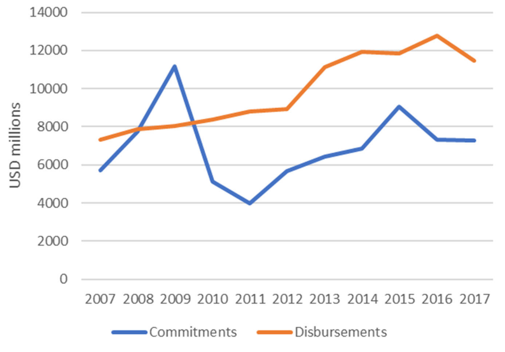
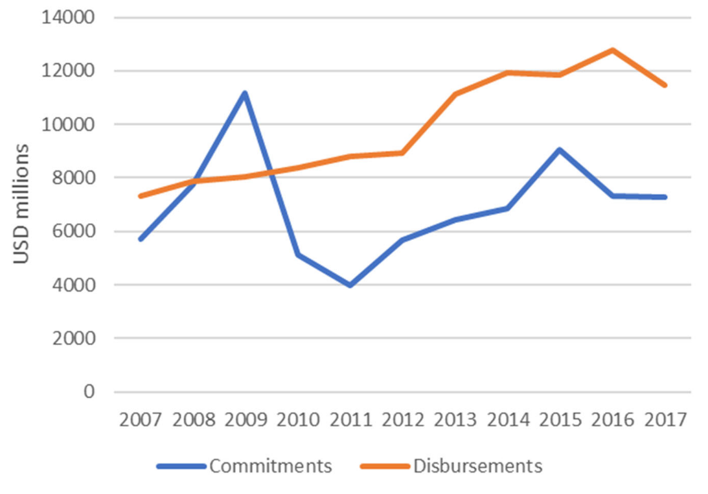

3 Monitoring funding to statistics with reduced reporting lag
3.1 What is the reporting lag?
The workflows for combining the two main data sources of PRESS are described in Fig. 3.1.
One key step when merging the PRESS data, reported by both donors and implementors, with the CRS data is avoiding duplication in a donor‐implementor‐recipient funding flow. To achieve this, the projects are examined against their unique identifier in both sources. The projects reported by implementers (mostly from the PRESS survey) are not counted as contribution of the reporting agencies. These projects are counted as projects by the donor agencies, after duplication checks were applied when merging the projects reported by implementers and the projects reported by donors. As the data and final report of PRESS depend in large part on the CRS database, which has a 12‐months lag in coverage, the previous editions of PRESS did not capture timely donor financial flows to statistics, leading to a structural lag in reporting.
Figure 3.1: How the lag in the CRS data led to a lag in previous rounds of PRESS.
This lag meant that in its previous format, PRESS could not provide timely information for partners in data and statistics, including:
Nowcasting the funding to statistics
Forecasting funding to statistics
Hence, despite the many improvements in PRESS over the years, the lack of timely aid reporting is a persistent concern among its primary users, especially development aid providers. With a growing interest in supporting data and statistics, there is an increasing demand for timely data to plan activities and projects and coordinate development co‐operation efforts. This issue has become particularly urgent in light of the coordinating efforts to fund the Cape Town Global Action Plan for Sustainable Development Data (CT‐GAP),1 as well as in the context of a diverse data ecosystem comprising new actors.
PARIS21 addressed this request in its 2019 annual meeting by introducing the concept of a methodology extension. While the PRESS methodology will still be used to report information until 18 months before the publication, the methodology extension will provide stakeholders with PRESS‐like information on more recent periods, therefore reducing the reporting lag significantly. This concept became more relevant in 2020, when the development co‐operation community had to face the challenges that arose due to the COVID‐19 pandemic in national statistical systems (PARIS21 2020a) and funding to data by domestic and external stakeholders (PARIS21 2020b).
3.2 Estimating up‐to‐date support to statistics using CRS
While the previous PRESS (from 2008 to 2019) captured the support to data and statistics by looking at global commitments2 to statistics, the annual disbursements3 received by a certain country are also informative for donors and countries when planning their activities, especially those short‐term activities financed by a donor’s annual or biannual budget. Leveraging this additional variable allows for the estimation of funding to data and statistics received by countries in the current and coming years while still using the same base data, i.e., the CRS and PRESS surveys (and many other data sources on development aid, see section 3), which include both variables for each project.
Looking at disbursements instead of commitments to estimate the support to data and statistics has two distinct advantages:
Disbursements capture the actual release of funds, so are more useful for donor planning purposes.
It can take several years to disburse a commitment and some commitments are never disbursed. Hence, by design, there are more data points available on disbursements than commitments over the same time period. The additional data on disbursements allows for better understanding of financing patterns and donor behaviour, leading to more robust data analysis.
This availability of more data points enables us to estimate support to statistics in the current year (nowcasting) through robust regression analysis. It also provides more substantial evidence of funding trends in the coming years (forecasting). The following sub‐sections will focus on how to arrive at these estimates.
3.2.1 Nowcasting: using commitments to predict current disbursements
Given that CRS has a lag of 12 months for reporting both disbursements and commitments, one way we can estimate support to statistics disbursed in the current year is by looking at the relationship between the two variables. The literature on aid predictability indicates that these two variables may be closely related over time. A 2013 study examining aid predictability based on CRS data also shows that commitments have a significant impact on disbursements five years after they were made (Hudson 2015).
For most development projects reported to the CRS and the PRESS survey, both commitment and disbursement data are reported. Even when these variables are not directly reported, however, the missing value can usually be imputed.4
Using these two variables, PARIS21 has developed a simple linear regression model to estimate the funding from donors based on historical data at activity level. Regression analysis was conducted to predict current disbursements based on reported commitments, captured by \(Average\_Annual\_Spending\).
\[\begin{align*} Disbursement &= Average\_annual\_spending \cdot k + d \\ \text{where} ~~~~ Average\_annual\_spending &= \text{Total Project Commitments}/number\_of\_years \end{align*}\]
k is the regression coefficient and d is the error term. The number of years is the difference between the start date and end date of a reported activity. Reported dates are used for activities with missing value in those two variables. The analysis used the most recently accessible data from the CRS5.
This model shows a correlation between disbursements and average spending. Average annual spending is calculated based on the assumption that commitment without a detailed plan for disbursement will be distributed evenly by year, from the expected start year to the end year of the project.
| Estimate | Std. Error | t value | Pr(>|t|) | |
|---|---|---|---|---|
| (Intercept) | 38.455 | 8.04901 | ‐4.778 | 0.0139* |
| \(Average\_Annual\_Spending\) | 0.87461 | 0.05191 | 12.997 | 0.0456* |
The analysis of CRS data shows a significant correlation (90%) between disbursements and commitments each year. The value of k and the predictability of the model vary depending on the reporting pattern of each donor. For example, while the commitment numbers reported by most donors each year are usually higher than disbursements (Fig. 3.2 on the left), this is reversed in the case of a few donors (Fig. 3.2 on the right)6.
 

Figure 3.2: Disbursements vs commitments reported in CRS (all donors) on the left. On the right, disbursements vs commitments in the CRS reported by the UK.
Using the above method, PARIS21 was able to nowcast the funding to statistics in years that the most recent CRS data yet to cover. For instance, although the CRS data available in early 2020 only includes full coverage of official aid until 2018, the nowcast is able to provide information on aid to statistics including 2019 and 2020. This is because the stable relationship between average annual spending and commitments is leveraged, which allows us to estimate the 2019 and 2020 disbursement values, from the 2018 reported commitment values.
As a result, for the first time, the 2020 edition of PRESS presented information on funding to data and statistics up to 2019, as opposed to two years prior as in editions including and before PRESS 2019.7
3.2.2 Forecasting: anticipating future funding
The predictability of disbursements and commitments used for nowcasting funding to statistics decreases greatly after the current year, since, for example, many projects which commenced in 2017 will end in 2020. However, this lack of predictability can be partially mitigated by the creation of a forecasting model based on a few well‐informed assumptions, leveraging past PRESS data and PARIS21’s institutional knowledge on support to statistics for over two decades. These assumptions, which can lead to better forecasting quality, are described below:
Continuation of certain long‐standing projects: We can assume that large projects such as the support to the Demographic Health Survey driven by USAID, IMF’s national and regional training on economic statistics, and the World Bank’s programme on statistical development will remain stable in the near future. Significant changes on these programmes are also easier to target and detectable. These projects are generally stable and attract similar spends each year. Likewise, the upcoming censuses or major surveys in low‐income countries are expected to be funded partially by donors.8 This information accounts for nearly half of the total amount for data and statistics. Confirmation from donors of the continuation of these projects can further improve the accuracy of this analysis.
Termination or reduction of funding for certain projects: We can also anticipate the termination or reduction for funding tied to a project based on its specific nature. For instance, the support for censuses is a one‐off disbursement and will not reoccur until the next census round. Similarly, if a country become no longer eligible for ODA, graduate from IDA’s borrower list or becomes an upper‐middle‐income country, it is then expected to receive a lower ODA grant and become ineligible for some loans. In those cases, support for statistics might be affected disproportionally, given its low priority.
It is also crucial to state that these predictions can only be accurate if the following additional assumptions are met:
- Development aid providers maintain their current levels of effort
- Existing programmes continue to run
- Commitments are fully disbursed
- There is a response to prioritised needs such as censuses
The estimation is also limited if donors agencies publishing the new initiatives with a lag. The predictability of both nowcast and forecast on funding to data and statistics also relies on aid providers committing to maintaining the transparency and timeliness of their aid data. The forecasting looks at contribution until \(n+2\), given most international organisations’ work plan don’t go beyond that horizon.
Due to the uncertainty caused by the COVID‐19 pandemic, the forecasting results from this methodology were not presented in PRESS 2020. These will appear in the future PARIS21 publications once more evidence becomes available.
In sum, the forecasting estimates should be interpreted with significant caution even if the above model indicates a relative increase in the coming years. According to many historical estimates, the funding gap for data and statistics (i.e. to find the entire CT‐GAP) is far from being closed. This gap is likely to be exacerbated by the effects of the ongoing COVID‐19 crisis in large parts of the globe
3.3 Expanding the PRESS database
3.3.1 Exploring alternative data sources for aid flows on statistics
Apart from nowcasting and forecasting disbursements to statistics from PRESS data, another way to address the structural lag in aid‐flow reporting can be by attempting to remedy the root cause of the problem – the dependency on the CRS database – and searching for more timely information in alternative data sources. PARIS21 has identified three main (types) of alternative data sources, outlined below:
The International Aid Transparency Initiative (IATI)
The IATI datastore is the largest alternative database outside of OECD‐DAC data for official development assistance. With more than 100 donors reporting to this database, IATI has a much shorter lag than CRS. It also covers more projects by philanthropic foundations. The COVID‐19 pandemic and the rising need for coordination has also incentivised aid providers to report to IATI with less delay. However, IATI data suffer from a lack of quality assurance and inconsistency within the dataset. Although it uses a similar data structure as the CRS, the reported projects in IATI may not include important granular information, such as the project description. Furthermore, as many donors only committed to reporting to IATI after 2014, the lack of historical data for drawing time series also affects its ability to forecast.
Donors’ transparency portals
In recent years, global donors have strengthened their efforts in aid transparency. Many donors have developed online data portals or uploaded online datasets to share information on their aid projects, especially the major donors in statistics such as the World Bank, UNDP, USAID, FCDO, IDRC, etc. These datasets usually have a similar density of information as the CRS data and are usually updated more frequently than CRS. However, the majority of donors still lack appropriate portals and public datasets. Furthermore, merging these different datasets is possible, but time intensive.
PARIS21 has been exploring these data sources since 2019 and has accumulated knowledge over this period. For example, the USAID dataset helped PRESS 2019 to identify the USA’s support to statistics for the first time; in particular, its effort with the Demographic Health Survey (DHS). PARIS21 has also established a methodology for merging and harmonising the aforementioned datasets. The methodology maps variables in different datasets against each other and uses internal project identifiers to avoid duplications.
Multilateral donors’ prospective reporting to the PRESS surve
The online PRESS survey (introduced in Sec. 1.2) includes a feature that allows donors to report on future projects. Since many donors have a biannual programme of work, in each year’s survey, they are encouraged to provide information on the project they have planned or committed to in the near future. In the survey, donors can verify, edit, and cancel future projects in the next round of reporting. However, previous editions of PRESS did not fully reflect future projects due to the report’s focus on accuracy. However, these future projects could still contain valuable information to assist in the projection of aid flows. The methodology developed by PARIS21 leverages these projects as an underutilised existing data source that may not reflect completely on the activities from donors. Nevertheless, it is useful for nowcasting funding.
The comparison of the above data sources can be found in 3.3. As another important data source in the area of data and statistics, the Eurostat’s donor survey is analysed in Box 1.

Figure 3.3: Comparison of data sources.
Box 1: The Eurostat’s Donor Survey – and why it is not included in the PRESS database
The annual Donor Survey by Eurostat aims to provide an overview of statistical projects in the respective countries to allow for better planning of assistance in the field of statistics, to benefit from acquired experience, and to avoid overlap. The survey is distributed to donor countries, international organisations, and the recipients (mostly Eurostat member states or partner states) of support to data and statistics.
According to the report of the 2020 round, the Donor Survey’s main objectives included:
facilitating better planning and prioritisation of assistance, especially amongst the donors;
increasing transparency/visibility for donors and implementing agencies and potentially serving as an “audit” document for beneficiaries;
providing the beneficiaries with a broad overview of the areas in which they are receiving support, also at regional level, and prioritising their future needs;
benefitting and learning from the experiences, good practices, and shortcomings of other projects;
facilitating a dialogue between beneficiaries, donors, and implementing agencies.
At donor country level and on the donors’ side, respondents to the Donor Survey overlap with CRS. However, the CRS reporting is coordinated by one national focal point, while the Donor Survey questionnaire is distributed to both the aid agencies and national statistics offices who provide technical support. However, the Donor Survey data set does not have a good system to harmonise the data from the two sides, nor does it contain the program identifiers, which are essential to avoid duplication when combining information with other sources. Unlike the development of financing databases, the Donor Survey also lacks a mechanism to update previous years’ reported projects. Coverage of the survey is also not comprehensive enough to provide additional values to the alternative data sources identified in this document.
3.3.2 Addressing gaps in the alternative data sources
To take advantage of the alternative data sources, PARIS21 combined the information from CRS and online surveys with these alternative data sources to create a more up‐to‐date, harmonised database on funding for data and statistics. However, this means that two important problems must be addressed, described below:
The completeness problem: A common weakness of the alternative data sources, compared with CRS, is their incomplete coverage. This is especially apparent in IATI where, unlike CRS, donors may not report their full portfolio, leading to a lack of comprehensive information (a “vertical” information gap i.e. multiple donors but incomplete project information for individual donor). Furthermore, the CRS uses a more “centralized” reporting system for each donor country, whereby information from different agencies providing ODA is gathered under one entity before reporting to CRS as a whole. The IATI, on the other hand, allows different agencies in a single donor country to report their data separately. This implies different reporting patterns for different agencies based on their capacity to do so regularly, and a lack of overall coordination.
The coverage problem: CRS contains information from over 100 donors. On the other hand, donor transparency portals suffer from a “horizontal” problem, i.e., they usually have complete coverage and contain the full portfolio, but fewer than ten major donors provide access to such open and easy‐to‐use databases.
PARIS21 has mitigated the horizontal and vertical problems in alternative data sources by harmonising and linking these databases. The alternative sources provide a wider coverage, while the combination of CRS, IATI and donors’ databases enhance the completeness of the data. The final data set used in the analyses combines the alternative data sources and PRESS data using project IDs and other identifiers. As a caveat, however, the total number of projects included in the alternative sources still only represents 40% of all number of projects reported in the CRS.
The advantage of using such data sources, such as the timeliness and inclusion of philanthropic foundations, makes them a useful extension of PRESS data, especially when trying to solve the lag issue. However, their weaknesses imply that they are not a substitute for CRS or, by extension, conventional PRESS analysis.
3.3.3 Linking the alternative sources: the new harmonised database
The next step in leveraging the independent alternative data sources described above is to link them with PRESS data and create a new harmonised database of disbursements for data and statistics at project level.
Using disbursements as the primary variable to determine the support to statistics is even more beneficial at this stage, and data on annual disbursements is adequately available in most of the sources considered above. The activity‐based CRS data, for example, contain nowcasting/forecasting regressions on this new data set by Simon etc. to see value add and/or consistency of our findings! Should we present this? I think you did it and found little to no change right? disbursement information for more than 98% of the projects. Similarly, the PRESS survey for multilateral donors provides specific information on disbursement plans (though it is project‐based). The donors’ transparency portals are also expenditure/disbursement based.
However, the IATI database is weaker in this regard: it contains an unusually high percentage of negative commitments or disbursements. For example, data downloaded from the IATI database in 2018 contained negative value commitments or disbursements in 18% of projects reported9. In comparison, less that 1% of activities reported in CRS has negative value, mostly associated with loan repayments and correction of previous entries, i.e. not a database error.
For the harmonised database, the missing disbursement values were imputed based on the assumption that the commitments were distributed evenly from the start date to the end date of the project. The negative projects in IATI were corrected or removed by cross‐validating against CRS. The duplicated projects were removed based on project identifiers. Consultations with several multilateral donors were conducted to ensure the validity of the final data.
Fig. 3.4 presents an example of how the new harmonised dataset looks after linking the different sources. For the 15,312 projects in the new datasets, 54% of disbursement activities come from the CRS data, compared with over 73% in the earlier dataset used for PRESS. In the new dataset, the PRESS survey accounts for 27% of projects, while IATI data and donor databases account for 19% of projects. By filtering through the data using recipient country and year, donors can already observe the upcoming funding received by a country for statistical development. It is then easier for them to identify funding gaps in prioritised areas. Hence, the new harmonised database can achieve better diversification of data sources and reduce the dependence on CRS.
Figure 3.4: Comparison of PRESS and the new harmonised database for the share of projects in the final data sets, by sources of data, 2016‐2018.
3.4 Bringing them together – nowcasting and forecasting with the new harmonised database
PARIS21 applied the same model on nowcasting and forecasting support to statistics (disbursements) but based on the new harmonised database, linking PRESS data with the aforementioned alternative sources. The main findings of this approach were similar to those based on CRS estimations: there is no indication of a systematic increase in funding to statistics in the current or coming years.
References
See https://unstats.un.org/sdgs/hlg/cape-town-global-action-plan/↩︎
A firm obligation, expressed in writing and backed by the necessary funds, which is undertaken by an official donor. It provides specified assistance to a recipient country or a multilateral organisation. Bilateral commitments are recorded in the full amount of the expected transfer, irrespective of the time required for the completion of disbursements. Commitments to multilateral organisations are reported as the sum of (i) any disbursements in the year reported on, which have not previously been notified as commitments, and (ii) expected disbursements in the following year.↩︎
The release of funds to or the purchase of goods or services for a recipient; by extension, the amount spent. Disbursements record the actual international transfer of financial resources, or of goods or services valued at the cost to the donor. In the case of activities conducted in donor countries, such as training, administration, or public awareness programmes, disbursement is assumed to have occurred when the funds have been transferred to the service provider or recipient. These may be recorded as gross (the total amount disbursed over a given accounting period) or net (the gross amount, less any repayments of loan principal or recoveries on grants received during the same period). It can take several years to disburse a commitment.↩︎
For example, the amount for technical support projects that do not have direct monetary transfers can be replaced by a cost estimate by the provider. In cases where the disbursement information is missing, the estimated disbursement amount can be calculated by dividing the unspent commitment amount using the number of years left before the expected end date↩︎
See https://stats.oecd.org/DownloadFiles.aspx?DatasetCode=CRS↩︎
This particular reverse correlation can be explained by different factors. Firstly, the financial crisis impacted the continuity of some donors’ ODA flow more than others. The significant variation of the exchange rate or inflation rate of a donor could also lead to a sudden change in the converted constant value of aid. In addition, some donors tend to make more long‐term commitments than others, resulting in a distribution of disbursements over a long period of time, even after the donors had significantly reduced their overall international aid package↩︎
Due to the disruptive effect of the COVID‐19 pandemic on the predictability of the model, the nowcasting results for 2020, although produced, were not presented in the PRESS 2020 report.↩︎
The COVID‐19 pandemic has brought great uncertainty to this assumption, especially for censuses planned to take place between 2020 and 2021. Although funding for most censuses has been secured, many countries have diverted their national budget to other, more urgent matters (CCSA 2020; UNFPA 2020), resulting in the postponement of external funding↩︎
Based on data collected in 2019, the future improvements of the IATI database have resolved this issue.↩︎